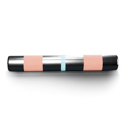
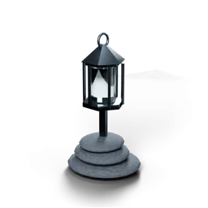
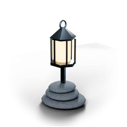
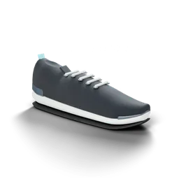

Chaque animation part d’un événement réel (bouton « Rejouer » ici), ne bloque aucune commande, n’exécute aucune règle et donne son état final immédiatement sous « mouvement réduit ».
Niveau 14 → 4 797 / 15 450 XP. La teinte calme montre où le niveau était.



Balise 4 sur 9 · L’archipel des Marées
